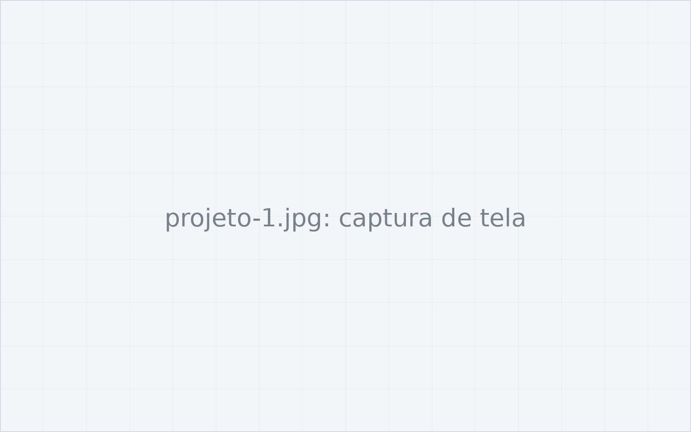

Painel de análise de perdas e estoque
- Desafio
- Os times de loja e compras analisavam perdas em planilhas separadas, sem um critério único de priorização.
- Solução
- Um painel com classificação ABC, filtros por loja e categoria, controle de acesso por perfil e exportação dos dados.
- Resultado
- [Inclua um número real: tempo economizado, perdas reduzidas, usuários ativos.]
- Aprendizado
- [O que este projeto te ensinou: uma decisão que mudaria, um erro que evitaria, algo que passou a fazer sempre.]